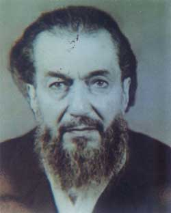

Mehmet Feyzi Pamukçu [1912-1990]

1912'de Kastamonu'da doðdu. Ýlim ve takva sahibi bir zattýr. Bediüzzaman'a altý yýl hizmet etti. 1943 Denizli, 1948 Afyon'da Bediüzzaman'la birlikte tevkuf bulundu. 1990 yýlýnda Hakkýn rahmetine kavuþtu.
Üç Feyzi'den biri: Mehmed Feyzi Pamukçu
Uzun boylu, nuranî çehreli, ak sakalý ile Mehmed Feyzi Efendi Nur Risalelerine hizmet eden, Bediüzzaman'a gönül veren, ehl-i ilim ehl-i takva bir zattýr.
Nur manzumesinde Ahmedler vardýr. Mehmetler vardýr, Sabriler vardýr, Tahirler vardýr, Feyziler vardýr,
Bu Feyzilerden birisi de Mehmed Feyzi'dir.
Ahmet Feyzi Kul
Hasan Feyzi Yüreðil.
Mehmet Feyzi Pamukçu.
1912 yýlýnda Kastamonu'da doðan Mehmed Feyzi Efendi, 1943'de Denizli, l948'de Afyonkarahisar hapishanelerinde Üstad'ý ile birlikte bulunmuþtu.
"Risale-i Nur ve Bediüzzaman hakkýnda Türk Hakiminin Millet Adýna Verdiði Kararlar-Ehl-i Vukuf Raporlarý ismi altýnda 1962 senesinde Avukat Bekir Berk'in neþrettiði kitabýn 'Kaziye-i Muhakeme Denizli Aðýr Ceza Mahkemesi' baþlýðý altýnda verilen bir beraat kararýnda kimliði þöyle takdim ediliyordu.
"Kastamonu Müderris Atabey köyünden Ýzzet oðlu 1328 doðumlu 6.10.1943'den beri mevkuf, sabýkasýz Mehmed Feyzi Pamukçu."
Kendilerini muhtelif tarihlerdeki ziyaretlerimin sonuncusu 13 Nisan 1975 tarihinde olmuþtu.
Bediüzzaman'la olan beraberliðinin hatýralarýný mezkûr tarihin gecesinde geç saatlere kadar anlatmýþtý. Bu notlara göre muhterem Mehmed Feyzi Pamukçu hatýralarýný þöyle anlatmaya baþlamýþtý:
Beni Nurlara celbeden 32. Söz olmuþtu.
"Ýlk defa 1937 senesinde Ýstanbul'da Kastamonulu bir adam 'Kastamonu'ya bir hoca geldi' diye Üstaddan bahsetmiþti. Daha sonralarý Kastamonu'ya geldikten bir sene kadar geçmiþti ki, Üstadý tanýmak þerefine erdim. Beni nurlara celbeden Otuz Ýkinci Söz olmuþtu. Daha evvel Arapça bildiðim için Hizbü'n-Nurî'yi vermiþti. Otuz Ýkinci Söz'ü okuduðum zaman yattýðýmda bir rüya görmüþtüm. Büyük bir þose, hava ise sümbülî, alakaranlýk. Kalabalýk insanlar. Bu asrýn vazifeli þahsiyeti geliyor. Ekin biçildiði zaman çýkan týrpan sesi iþitiyorum. Hýþýrtý devam ediyordu. Daha sonraki senelerde Üstad'la beraber tevkif edilip Denizli'ye gittiðimiz zaman aynen o yolu orada gördüm. Nazif Çelebi'deki Üstad'ýn abasý rüyadaki ayný aba idi...
"Üstadýn bir kerametini gözlerimle gördüm"
"Denizli hapishanesinde mahkeme gidip geliþlerimizi hatýrladým.
"Ýkiþer kiþi halinde kelepçe takarlardý. Her duruþmada çeþitli arkadaþlarla kelepçelenirdik. Bir gün beni Üstad'la beraber baðladýlar. Mahkemeye gidiyorduk. Tam kabristanýn yanýndan geçerken Üstad Fatiha diyerek okumaya baþladý. Kelepçe, zincirli ve asma kilitliydi. Yan gözümle Üstad'a baktým. Fatihayý okuduktan sonra ellerini yüzüne sürdü. Elimiz beraber baðlý olduðu halde benim elim kalkmadý. Bunu Üstad'ýn bir kerameti olarak bizzat müþahede ettim.
"Üstad, herkesi kendi mertebesine hizmete sevk ve idare ederdi"
"Üstad kinini medh ü sena ile, kimini takdirle, kimini de takbihle idare etmiþti. Ýþte bu idarecilik bir kemal alâmetidir. Herkesi kendi mertebesinde idare ederdi.
"Ýkinci Cihan Harbinde Ýstanbul'da yedi ay kadar ihtiyat askerliði yaptým. Fatih'te bulunmuþtuk. Terhis olduktan sonra orada kalmak istiyordum. Kardeþiniz Tahsin (Aydýn) bana mektup yazmýþtý. Üstad mektubun altýna þu notu kaydetmiþti:
"Feyzi kardaþým, Ýstanbul Eski Said'i bilir. Yeni Said'in kardaþý Feyzi'yi aldatýp kendine çekmesin. Senin orada kalmana Risale-i Nur razý deðil!... " Bu notu kýrmýzý kalemle, yeni bir uçla yazmýþtý, kendi hattýydý.
"Üstad Fevzi'yi Feyzi yapmýþtý"
"Üstad'la beraber bulunduðumuz yýllarýn hatýralarý hülasaten þöyledir:
"Eskiden ismim Mehmet Fevzi idi. Üstad, 'Mehmet Feyzi olsun' dedi ve öyle oldu.
"Üstad, daðda hastalanmýþtý"
"Bir gün dýþarýdan bir kadýn, 'Hoca Efendi seni çaðýrýyor' diye bana bildiriyordu. Uykudan kalkarak kapýya baktýðýmda kimsecikler yoktu. Hemen kalkýp evine gittim. Fakat evde kimsecikler yoktu. Arkadaþlarla daða gitmiþ. Ben de daða gittim. Üstad beni görünce, 'Nereden çýktýn sen?' dedi. Ben de 'Siz çaðýrtmýþsýnýz' dedim. 'Hayýr ben çaðýrtmadým', dedi. Daðda hastalanmýþtý. Ata binerek eve getirdik.
"Yolda atýn üzerinde bile Risale tashih ederdi"
"Mektuplarý ve risaleleri daðda veya evde tebyiz ederdim bazan da kendi aðzýndan yazardým. Atla daða giderken yolda bile boþ durmazdý. Siyah bir atý vardý, hayvanýn üzerinde eserleir tashih edeceði zaman dizginini tutmadýðýmýz halde at kendiliðinden dururdu.
"Kýrda namaz kýlýyorduk. Namaz esnasýnda yanýmýza iki camus geldi. Ýki-üç metre kadar yaklaþtýlar. Ben kortum ve telaþlandým. Namazdan sonra Üstad bana: 'Senin telaþýn benim namazýmý da teþviþ etti' dedi."
Üstad Bediüzzaman'la bulunduðu günlerde hasretle anan Mehmed Feyzi Efendi, hatýralarýný anlatýrken dertleniyor:
"Demler o demler, zaman o zaman idi..." diyerek Bediüzzaman'la geçen mesut zamanlarýný hasret hisleriyle anýyordu.
"Arabî-Türkî kendi eserlerinin tamamýný Üstad'a okudum"
"Arabî ve Türkî kendi eserleri olan Risale-i Nurlarýn tamamýný kendisine baþtan sona okudum. iþte ben bununla iftihar ederim.
"Asiye Haným (Mülazýmoðlu), dedesi Küçük Aþýk'ýn Mevlânâ Halid Hazretlerinden aldýðý cübbeyi getirmiþti. Cübbeyi yýkadým, suyunu kabristana döktüm. Hayatta iftihar ettiðim bir husus da budur.
"Nurlarý köþe bucak saklardýk. Beþinci Þua'yý kömürlerin içine saklamýþtýk. Tevhid Risalesinin ilk müsveddesini ise Vali Avni Doðan aldý.
"Üstad'a en ziyade Avni Doðan eziyet ederdi"
"Üstad'a en ziyade sýkýntý veren Avni Doðan'dý. Vali Mithat onun kadar eziyet etmemiþti. Mithat Altýok, Ýttihad ve Terakki fýrkasýnda kâtipmiþ. Üstad'ý o zamanlardan tanýyordu. Belediye Reisinin evinde Üstadla görüþmek istedi, fakat Üstad görüþmeyi kabul etmedi.
"Fevzi, Kaza-i Ýlâhidir"
"Denizli hapsinden sonra, yeþille beyaz karýþýmý bir sarýk sarmýþtý. Pencereden bana þöyle seslenmiþti :
"Fevzi kaza-i Ýlâhidir..."
"Kastamonu'dan ayrýlýrken müddeiumumilikte (savcýlýkta) ikindi namazýný kýlarak çýkmýþtý. Giderken 'Allahasmarladýk' diye baþlayan bir mektup yazmýþtý.
"Polis müdürü, Þükrü Bey diye bir zattý. Mithat Altýok on dokuz gün ifadem alýnýrken yanýmda bulundu.
"Ýfadem alýnýrken Üstad'ý kastederek, 'Akþam evinde kýrk baklava tepsisi vardý' diyorlardý. Ben de 'Yalan söylemeyin' diye cevap verdim.
"Bir yerde þöyle bir not bulmuþlardý:
"Ýstanbul'dan kitap geldi, kerameti gözüktü!' Bu kitaplarý kim getirdi diye çok sorup sýkýþtýrdýlar.
"Bir akþam baþkomiser gelip beni çaðýrdý.
"Ne yaptýnýz?' diye sordu.
"Ne yapacaðýz? Yatsý namazýný kýldýk...'
"Kim geldi?'
"Bilmiyorum, karanlýktý' diye cevap verdim.
"Ezaný kim okudu?'
"Ben okudum.'
"Bu ifadelerden sonra, rahmetli Emin Bey'e söyledim: 'Ben böyle dedim, þayet sana da sorarlarsa sen de böyle, söyle', dedim.
"Arapça mý okudun?' diye sordular. 'Evet' demiþtim. 'Bunun suçu yoktur. Kendi evimde, kapalý yerde istediðim þekilde okurum.'
"Emin Bey ne sordularsa hepsini biliyorum, diye cevap vermiþ.
"Emin Bey'i, 'Yalan söylüyorsun' diye tokatlamýþlar.
"Çaycý Emin'in büyük bir ihlas ve sadakatý vardý"
"Çaycý Emin Bey, ümmî olduðu halde öyle bir sadakat gösterdi ki kemal-i ihlâs sahibiydi. Yüksek bir meziyeti vardý... Benden üstündü.
"Ýfadelerimiz alýnýrken kamýþ kalemle, demir uçlarla çeþitli yazýlar yazdýrdýlar. Tâ ki ellerindeki kitaplarý kimin yazdýðýný tesbit edebilmek için...
"Vali Avni Doðan, alýp götürdüðü Risalenin aslýný bir daha vermedi. Dosyamýzýn kalýnlýðý yerden bir sandalye yüksekliðinde olmuþtu.
"Üstad istidasýný geri almýþtý"
"Denizli'de Mahkeme Reisi Ali Rýza Bey (Balaban) kademe kademe anfi gibi sýralar yaptýrmýþtý.
"Üstad hastalýðýný ileri sürerek 'mahkemeye gelemeyeceðim' diye istida vermiþti. Sonra mahkemenin müsbet halini görünce 'Ýstidamý reddediyorum!' dedi. Reis: 'Ey Said Efendi, istidayý geri mi alýyorsun?' diye tebessümle mukabele etti.
"Bir celsede müddeiumumi Üstad'ýn oturuþuna itiraz etti. 'Mahkemenin nizamýný bozuyor' dedi.
"Ali rýza Efendi ise, 'Doðru oturunuz' deyince; Üstad 'hastayým' diye cevap verdi.
"Reis, müddeiumumiye dönerek: 'Hastaymýþ ne yapalým? dedi. Sonra da 'Siz gidin istirahat edin' diye bir gardiyanla Üstad'ý gönderdiler.
"Bediüzzaman ve talebeleri hapishaneyi mektebe çevirdiler"
"Denizli'de, müddeiumuminin muavini adliye vekiline telgraf çekmiþ: 'Bediüzzaman ve talebeleri hapishaneyi bir mektebe çevirdiler!' diye.
"Üstad, 'Hapishanenin mektep olmasýndan memnun olunsun' diyordu.
Beylerbeyi Süleyman hapisten nasýl kaçmýþtý?
"Hapishanede Beylerbeyli Süleyman Hünkar ve arkadaþlarý kaçmak istiyorlardý. Süleyman: 'Deve bile olsa ben yine buradan kaçýrýrým' diyordu. Üstada, 'hoca ammi' diye hitap ederdi. Daha sonraki senelerde (1948) biz Afyon hapsindeyken Süleyman hapisten kaçarak Kastamonu'ya Sadýk Bey'in yanýna gelmiþ, bizleri aramýþ sormuþ. Sadýk Bey, 'Nasýl kaçtýn' deyince: 'Üstadýn Esmâ-yý Hüsnâ manzumesini Feyzi Efendi yazmýþtý, onu muska yaparak kaçtým!' diye cevap vermiþ.
Ýdamlýklar nurlarla imanlarýný kurtarmýþlardý
"Hapishanede mahkûmlar bize dualar yazdýrmak istiyorlardý. Delâil-i þerifi yazmýþtým. Aðýr cezalýlardan Ýbrahim bunu muska yaparak kaçmak istiyordu. Ben de 'Böyle þeylerle kaçýlmaz. Eðer kaçýlsaydý biz kendimiz kaçarýz!" diye latife yollu cevap vermiþtim. Daha sonra Ýbrahim'i idam ettiler. Bir çok mahkûmlarý kötü vaziyetten kurtarmýþtýk. Pislikten, kötü hayattan Kur'ân okuyarak, Nurlarý okuyarak kurtuldular.
"Bazýlarýný Kur'ân okurken, bazýlarýný tesbihat yaparken, bazýlarýný ise namazdan alýp götürdüler, idam ettiler. Kumardan ve diðer fenalýklardan alýp götürselerdi, ne olurdu biçarelerin hali?
"Üstad' yeni yazý ile Risaleleri yazýn' deyince, bazýlarý itiraz ettiler. Sadýk Bey ise, sadakatle, 'Üstad ne derse o olsun' diyordu.
"Nurcu ismini ilk defa Afyon'da duydum"
"Denizli'den sonra ise, l948 senesinde Üstadla birlikte ilk defa bizi Afyon hapishanesine gönderdiler. Gece vakti tevkif ettiler. O zamana karþý Nurcu ismini duymamýþtým. Ýlk defa Nurcu tabirini Afyon'da duydum.
"Afyon'da hepimizi bir nezaret odasýna koymuþlardý. Üstad bizleri, talebelerine göstererek: 'Bu on Said kadar hizmet etmiþtir. Þu yüz Said kadar hizmet etmiþtir!' diye iltifat ediyordu."
Kaynak: risale-inur.org